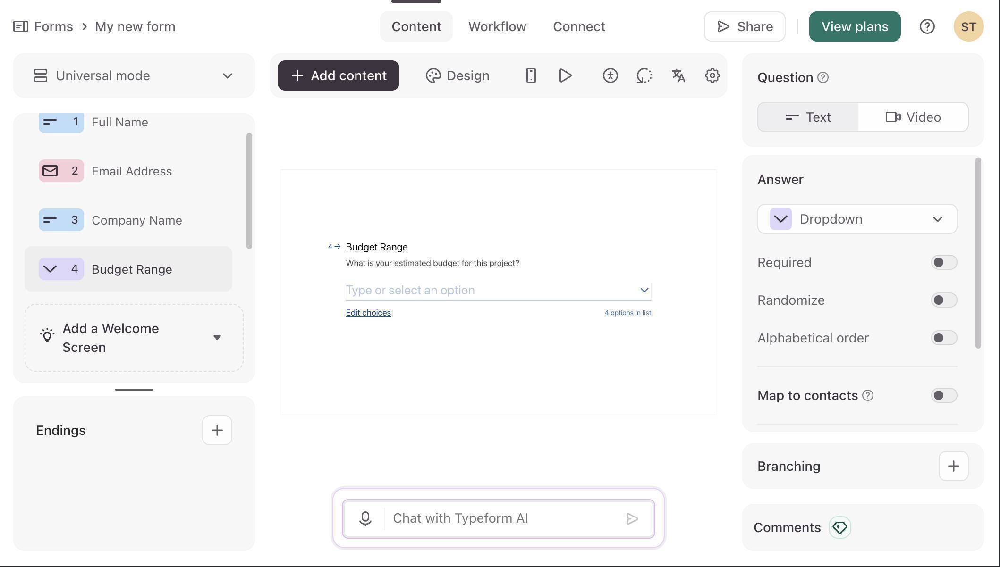
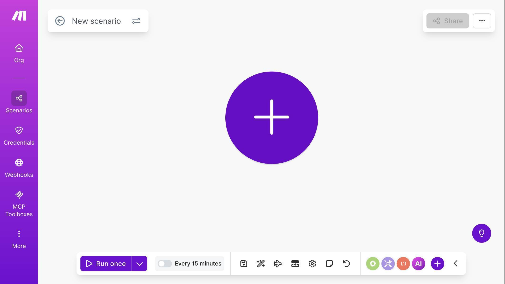
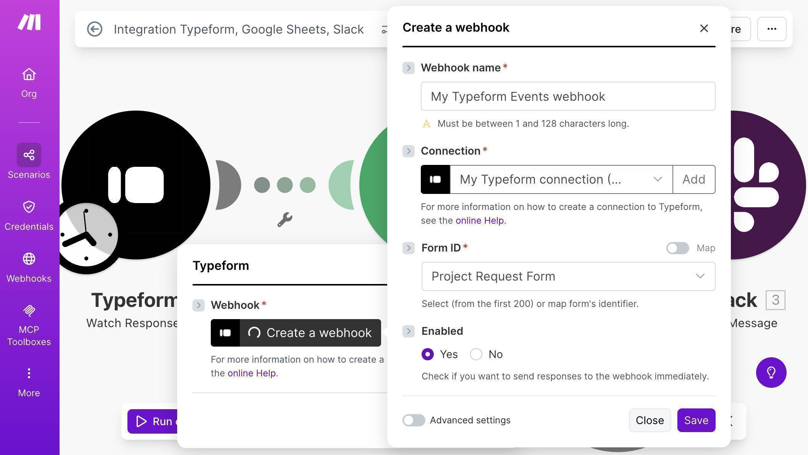
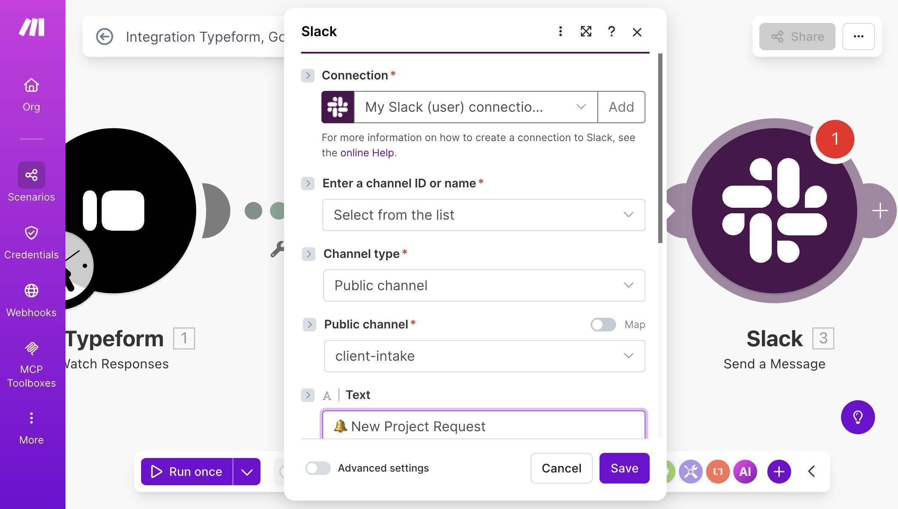
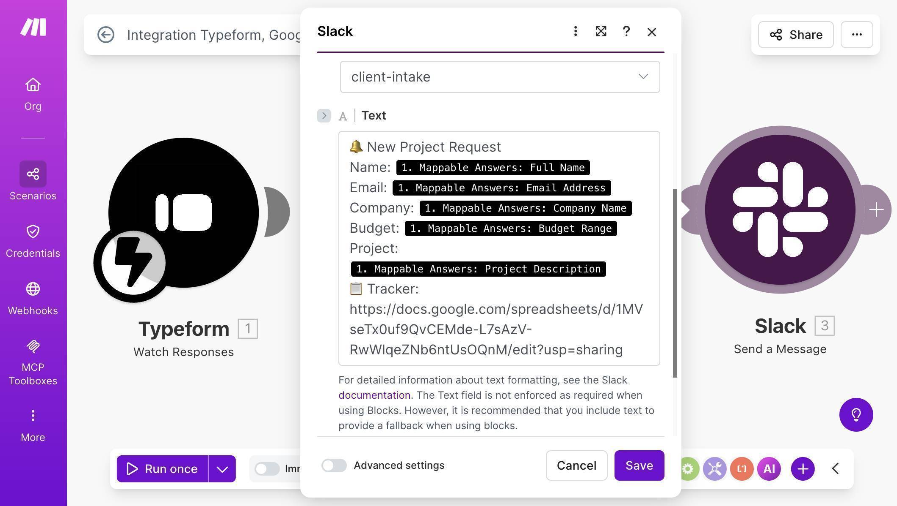
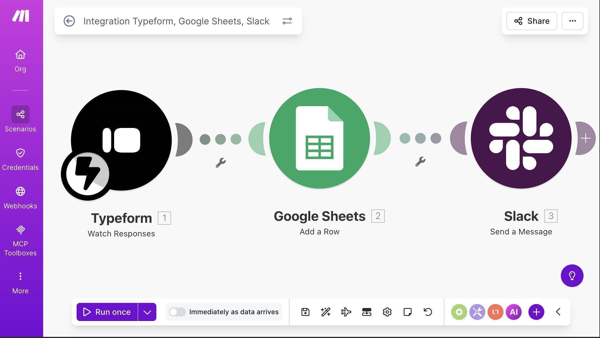
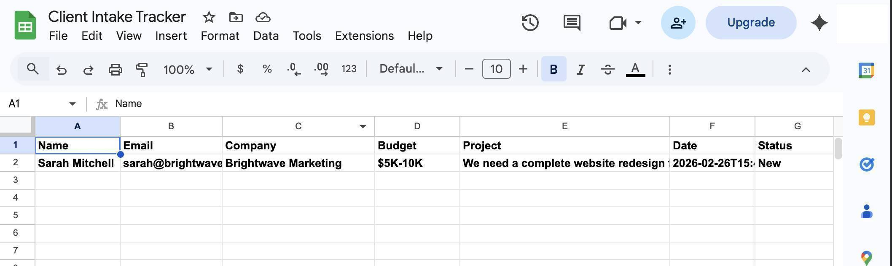

Home › Client Onboarding › Typeform to Google Sheets and Slack: Automate Form Responses with Make.com
Typeform to Google Sheets and Slack: Automate Form Responses with Make.com
·⏱ 8 min read·Client Onboarding
A potential client fills out your intake form on Typeform. The response sits in Typeform's dashboard until you remember to check it. By then it's been hours — or days. This Make.com tutorial shows you how to connect Typeform to Google Sheets automatically — every response lands in your spreadsheet and triggers a Slack notification the moment someone submits. No code, no manual exports, no missed leads.
Why Manual Form Exports Cost You Clients
Typeform collects responses beautifully — but it doesn't push that data anywhere useful on its own. Most freelancers and agencies check their Typeform dashboard once or twice a day, manually copy details into spreadsheets, and hope they don't forget to follow up. The problem isn't the form — it's what happens after submission. Every hour between a client filling out your intake form and your team seeing it is an hour where that client's interest is cooling. The fix takes 20 minutes to build and handles every submission automatically from that point forward.
Doesn't Typeform Have Built-In Integrations?
Yes — Typeform has native integrations with Google Sheets and Slack. They work for basic setups. But there are real limitations that matter when you need a reliable client intake system. Typeform's native Google Sheets integration maps all fields automatically with no control over column order, formatting, or adding calculated fields like a status column or submission date. The native Slack integration sends a generic notification — you can't customize the message format to include specific fields your team needs at a glance. And if you want to add logic later — like filtering responses by budget range or routing high-value leads to a different channel — native integrations can't do that. Make.com gives you full control over what data goes where, how it's formatted, and what happens next. When your process changes, you update one scenario instead of rebuilding integrations from scratch.
How the Typeform to Google Sheets Automation Works
When someone submits your Typeform client intake form, Make.com catches the response instantly and runs two actions: it adds a new row to your Google Sheet with the client's name, email, company, budget range, project description, submission date, and a default status — then sends a Slack message to your team channel with all the details so someone can start the intake process immediately.
You can build this entire automation on Make.com's free plan in about 20 minutes — no credit card required. Start free on Make.com →
Need a client intake form? Build one in minutes with Typeform's drag-and-drop form builder. Try Typeform free →
What Gets Captured Automatically
Form Field
Google Sheets Column
Example Value
Full Name
A: Name
Sarah Mitchell
Email Address
B: Email
sarah@brightwave.co
Company Name
C: Company
Brightwave Marketing
Budget Range
D: Budget
$5K-10K
Project Description
E: Project
Website redesign with landing page and CRM integration
Submission Date
F: Date
2026-02-26
Status
G: Status
New
Don't Use Slack? Alternatives That Work the Same Way
This guide uses Slack for team notifications, but Make.com supports any messaging tool. If your team doesn't use Slack, swap the last module for one of these — the rest of the workflow stays identical. Gmail: send a notification email to your team instead. Microsoft Teams: same concept as Slack, select the Teams module and pick your channel. Google Chat: if you're already in Google Workspace, this is the simplest swap.
How to Build the Typeform Client Intake Automation
Create your Typeform intake form — set up a form with fields for Full Name, Email Address, Company Name, Budget Range (dropdown), and Project Description. Typeform's AI builder can generate this in seconds. Publish the form when it's ready.
Typeform editor — client intake form with five fields configured
Log in to Make.com and create a new scenario — click "Create a new scenario" on your dashboard. You'll see an empty canvas with a large purple + button in the center.
Make.com scenario canvas — empty canvas ready to build
Click the + button and search for "Typeform" — you'll see two Watch Responses modules. Choose the one marked INSTANT — this uses webhooks to trigger the moment someone submits, instead of polling every 15 minutes. The INSTANT version is faster and uses fewer operations.
Click "Add" to create a new webhook — Make.com will open a configuration dialog. Name your webhook (e.g. "My Typeform Events webhook"), connect your Typeform account through OAuth, and select your "Project Request Form" from the Form ID dropdown.
Typeform webhook configuration — connection established, form selected, webhook enabled
💡 Pro Tip: In the Typeform INSTANT module configuration, set Completed to "Yes" — this ensures Make.com only processes fully submitted forms, not partial responses where someone abandoned the form halfway through.
5. Add a Google Sheets module — click the + button to the right of the Typeform module, search for "Google Sheets" and select "Add a Row."
6. Connect your Google account, set Search Method to "Search by path", select My Drive, and choose your "Client Intake Tracker" spreadsheet.
7. Map the fields from Typeform to your Google Sheet columns — Name (A) maps to Full Name, Email (B) to Email Address, Company (C) to Company Name, Budget (D) to Budget Range, Project (E) to Project Description. For Date (F), use the Typeform submission timestamp. Type "New" manually in the Status (G) field.
Field mapping — Typeform response data mapped to Google Sheets columns
8. Add a Slack module — click the + button after Google Sheets, search for "Slack" and select "Send a Message." Connect your Slack workspace when prompted.
Slack module — connection and channel configuration with client-intake channel selected
9. Compose the Slack notification using mapped fields — include the client name, email, company, budget, and project description. Add a link to your Google Sheet so your team can check the tracker immediately.
Slack message body with mapped Typeform fields — New Project Request notification with all client details
10. Save the scenario — your canvas should now show three modules connected: Typeform Watch Responses → Google Sheets Add a Row → Slack Send a Message. Click "Run once" to activate the webhook listener.
Complete Make.com scenario — three modules connected and ready to run
11. Test the workflow — open your Typeform link in an incognito browser window and submit a test response. Make.com will process it instantly, add a row to your Google Sheet, and send a Slack notification.
Typeform live form — test submission with sample client data
12. Check your Google Sheet — the test submission appears as a new row with all fields populated automatically, including the date and "New" status.
Google Sheet populated with test data — Name, Email, Company, Budget, Project, Date and Status columns filled
13. Check your Slack channel — the notification arrives within seconds of the form submission, with all the details your team needs to start the intake process.
Slack notification in #client-intake channel — complete project request details with tracker link
14. Toggle the scenario ON — flip the switch at the bottom of the canvas from "Run once" to active. The scenario now runs automatically for every new Typeform submission.
💡 Pro Tip: Want to filter by budget? Add a Make.com Router module after Typeform — route high-budget submissions ($5K+) to a priority Slack channel and lower budgets to a standard queue. This way your senior team members see high-value leads first without sorting through every submission.
Who Should Use This Automation
This workflow is built for anyone who collects client information through forms and needs a structured intake process. Freelancers using Typeform for project inquiries or discovery call requests. Agencies collecting briefs from new clients through intake forms. Consultants qualifying leads based on budget range and project scope. Small business owners receiving service requests through their website. If you receive more than 5 form submissions per week and process each one manually, this automation saves you time on the first day.
Apps Used in This Automation
This workflow connects three tools, all of which have free tiers. Typeform captures the client intake data through a conversational form experience. Make.com orchestrates the entire workflow — it's the engine that connects everything. Google Sheets stores the intake tracker with client details and status. Slack delivers instant team notifications so someone can start the intake process immediately.
Bottom line: If you're using Typeform to collect client inquiries and still checking the dashboard manually, you're adding unnecessary delay to every single lead. Typeform's native integrations work for basic setups, but they can't customize message formats, add status columns, or filter responses by criteria. This automation captures every submission in a structured Google Sheet with a default status and alerts your team in Slack the moment it arrives. It takes about 20 minutes to build, costs nothing on Make.com's free plan (each run uses 3 operations — well within the 1,000 monthly limit), and runs automatically from that point forward. You can build this automation now using Make.com's free plan in under 20 minutes.
Frequently Asked Questions
Does this work with Typeform's free plan?
Yes. Typeform's free plan supports webhook integrations through Make.com. You can use this automation with any Typeform tier, though the free plan limits you to 10 responses per month.
What's the difference between the two Watch Responses modules in Make.com?
The standard Watch Responses module checks Typeform on a schedule (polling). The INSTANT version uses webhooks — it triggers the moment someone submits, which is faster and uses fewer Make.com operations. Always choose INSTANT for real-time processing.
Can I add more fields to the form later?
Yes. Add the new field in Typeform, then update both the Google Sheets column headers and the field mapping in Make.com. The scenario adapts to any number of fields.
Do I need a paid Make.com plan?
The free plan includes 1,000 operations per month. Each time this scenario runs, it uses 3 operations — one per module. That covers over 300 submissions per month, more than enough for most freelancers and small agencies.